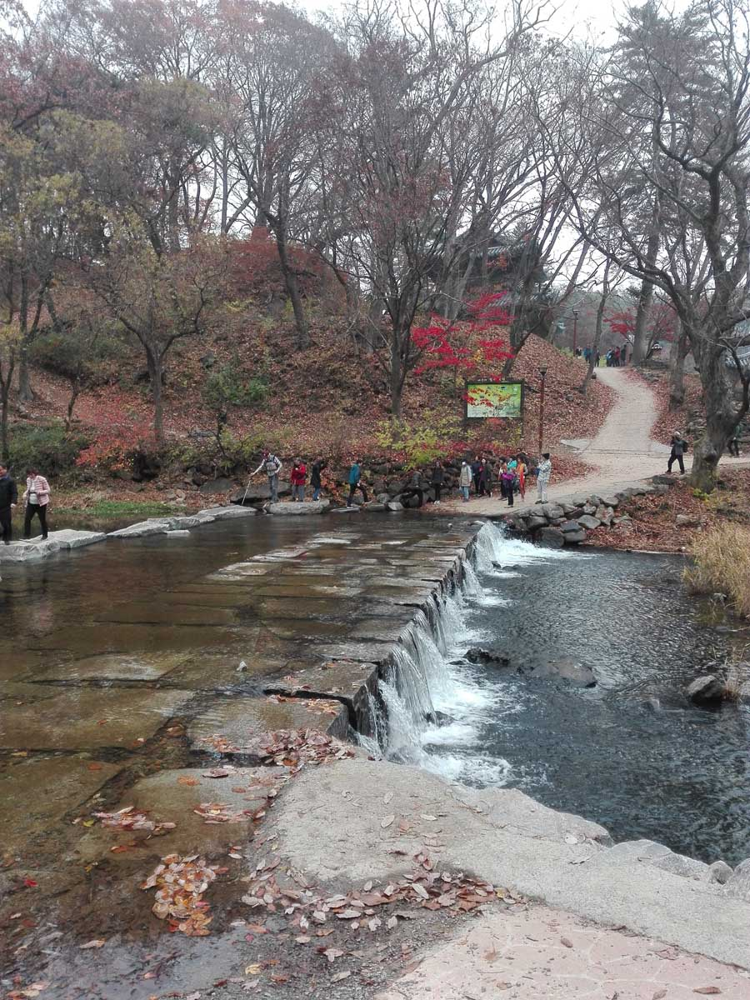
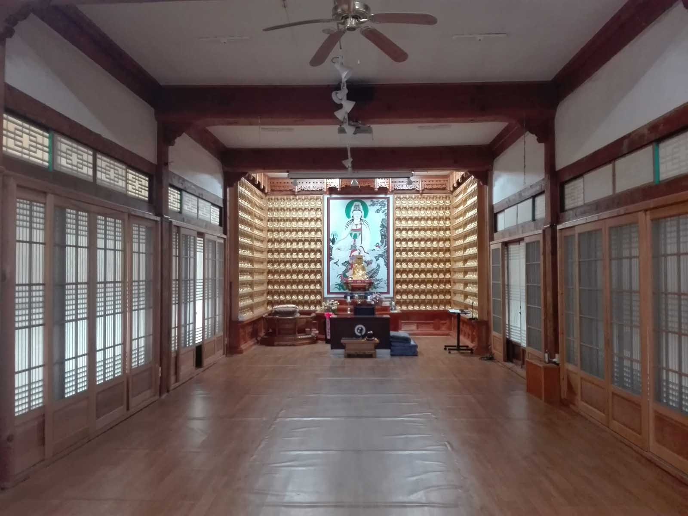
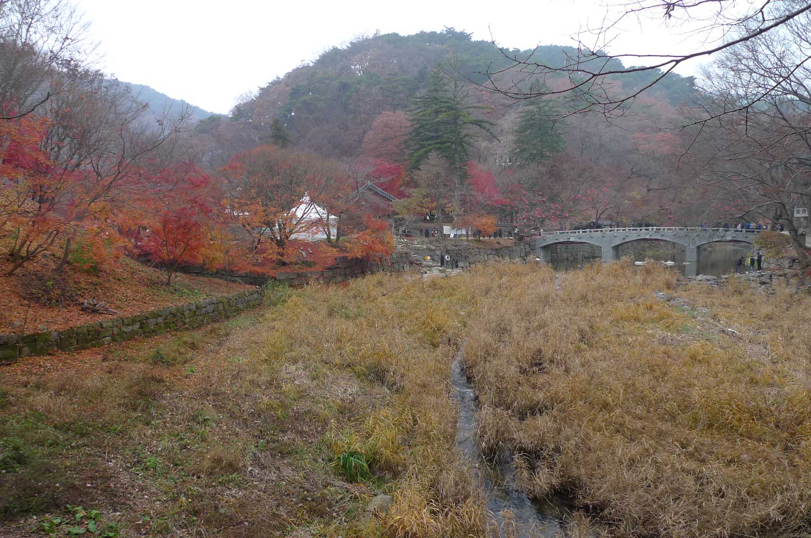

NaBalBong (나발봉)

We met at KAIST at 10:00. On this hike were Tina’s daughter and fiancée Balazs who were visiting from Hungary. This hike was
held on 11th of November, 2018. It was a beautiful fall day with leaves at their height of colors. The location is easy to
find. Follow Rt. 30 till you see the signs for the famous temple, MaGokSa 마곡사. There is a large parking lot near the
entrance to the temple complex. At the entrance to the parking lot is a small village associated with the temple complex
which has several cafes, restaurants and motels for visitors. There is also a public bus here which you can catch from the
GongGu (공주) bus terminal. The scenic path leading to the temple complex has several food vendors selling traditional Korean
snack foods. The only negative point is that this is a very popular temple especially on the fall weekends. However once you
cross the stream from the temple area leading to the hiking paths the crowds become much thinner.
Helpful hints

In the middle of the massive parking lot are public toilets. There will be no further toilets so it is a good idea to take
advantage of the opportunity. Often public toilets in remote places are lacking in toilet paper so it is good idea when
hiking or visiting remote temples to bring some extra tissues along with your hiking gear. From the parking lot you will
pass through the village until you reach the ticket office as labelled in Korean as 매표소. Along with the older men and women
by the sides of the road to the temple that sell produce or locally produced grains, you will find a man that sells a hard,
sticky candy called Yut or 엿 in Korean. Similar to taffy in Western countries, except it is made from rice and fermented
barley. If you’ve any loose teeth or fillings this stuff is all you need to dislodge them entirely. Be careful when using
the term 엿 however as it also doubles in meaning as a nasty swear word in Korean. If you prefer to leave your teeth intact
there are plenty of other filling foods such as 왕닭꼬치 (king chicken sticks), 왕소세지 (king sausages), 옥수수 (corn on the cob) or
even just a refreshing 슬러시 (slushy drink).
MaGokSa (마곡사)

Despite the crowds, it is worth your while to spend time visiting this temple. Note that “Sa” (사) means temple in Korean. It
is a beautiful temple complex with the mountains in the background dominating the location. At times companies hold business
conferences using the temple facilities. This allows companies to conduct business or hold seminars as well as treat their
employees to the peace and quiet of a Buddhist sanctuary at the end of a hectic work day. It is an opportunity to trade the
chaotic city life for the relaxation of the country side for a day but still have access to necessary modern amenities.
There are also camp facilities here for student groups which is part of the Traditional Buddhist Cultural center which
teaches young people about Buddhist culture and history.
Each stone represents a wish
Temple Stay
My wife and I have done a temple stay at MaGokSa 마곡사 so I can highly recommend this temple from personal experience. Temple
stay experiences vary between temples and occasions but are guaranteed to relieve stress and tension. Overnight stays are
generally held over weekends beginning around 2 p.m. and running for 24 hours. Magoksa 마곡사 temple stay was very well
organized from the tea ceremony at the beginning to the last hike in the surrounding woods with the monks at the end. Do be
sure to arrive on time, otherwise you miss the relaxing tea ceremony that sets the tone of the event. Naturally, the dinner
was a vegetarian meal served with 2 bowls, a cloth napkin and wooden utensils. The second bowl was for the barley tea that
the monk served us. At the end of the meal, we used warm water to clean the bowl, wiped down the bowl with our napkins and
put our dishes away for the next meals at our allotted location on the shelves.
Blind folded across a stream
In the evening, we participated in an exercise where I was led blind folded to walk across a stream with my wife guiding me
as to where to position my feet on the stepping stones as a demonstration of how much you can depend on another person. Bed
time was early, around 10 pm as you need arise at with the monks before the sunrise at 4 am. In our case we had a separate
room but quite often men and women sleep in separated quarters. As was the custom in many homes in Korea, even today,
bedding was rolled across the warm, heated floor to sleep on.
Buddhist ceremony service
In the morning we were escorted to the main temple to take part (or you can watch) the Yebool 예불 ceremony service that pays
respects to the Sakyamuni Buddha, Bodhisattvas and all his disciples. We were provided a book to follow along with the
chanting which was said to be a chance for self-reflection to make you feel calm and purified. Later we were taken on a hike
on a nearby mountain along a stream where the monks would expertly point out different rocks and trees of significance along
the way. After lunch we had a final gathering in the venue of a relaxing tea ceremony to discuss our experience and share
ideas for future visits. At popular temples like Magoksa 마곡사, usually a translator is available for foreigners.
Origins of MaGokSa (마곡사) Temple

Nearly each temple in Korea has a unique well - documented history behind its origins. MaGokSa 마곡사 was established by a monk
named Vinaya Master JaJang Yulsa in 640 during the Silla 신라 dynasty. Master JaJang was given 6800 m2 of land by the 27th
ruler of Silla 신라, Queen SeonDeok 선덕여왕 who was a devout follower of Buddhism, Silla’s official religion. Under her reign
many temples were built including MaGokSa 마곡사 in the valley of TaeHwaSan mountain 태화산. What is interesting about Queen
SeonDeok 선덕여왕 was that she was a ruler in her own right, not a Queen consort / wife. Her father, King JinPyeong 진평왕, had the
misfortune to have no sons only daughters but instead of finding a suitable male relative as his successor as per custom, he
allowed his daughter to prove her ability to rule as his successor. Although she was successful in winning her father’s
approval not everyone in the kingdom was appreciative of a woman ruler. A rebellion against her was swiftly crushed and
those responsible promptly executed along with their families. Despite this she failed to win recognition from the emperor
of the Tang Dynasty in China as the rightful ruler of Silla 신라. Nonetheless she quickly won support among her own people by
reducing taxes, a policy our current political leaders could learn from!
Reaching Nabalbong (나발봉)

There is an admission charge to enter the temple complex and hiking paths unless you are a senior citizen. There are many
trail signs to guide you on your hike. On this particular hike we followed the trails in a counter clockwise direction. This
trail was quite steep but leveled off when we reached the ridge. On this hike we had lunch around 1:40 p.m. Then we hiked
along the ridge until we reached NabalBong (나발봉) (414m). Then we started down a steep trail that was a little difficult due
to the abundant leaves. Some drizzle which began close to the end of the hike also made conditions a little slippery but we
soon we reached the road that leads back to the temple without mishap arriving at the parking lot arriving at 3:40 p.m. and
back at KAIST by 5:00 p.m.